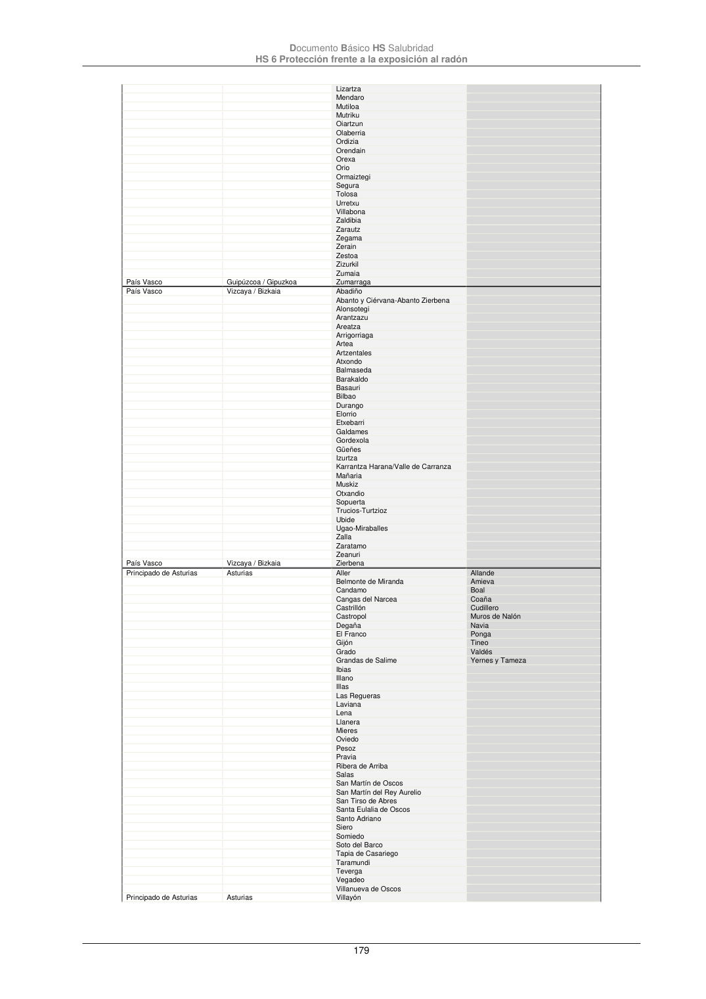

DB-HS Salubridad · edición 2022-06-14 · capa oficial
Documento DB-HS-oficial · SHA-256 del PDF 68df3caacc95f71aee2ec1ba7b2c65ae66155c21e3a8785521b8fdd4fd640d3b
Página física 179 de 184.
Copia fiel del PDF fuente · Fuente oficial
Ficha de la disposición en la fuente oficial
Formato: Texto de la página (Markdown)
Documento Básico HS Salubridad HS 6 Protección frente a la exposición al radón 179 Lizartza Mendaro Mutiloa Mutriku Oiartzun Olaberria Ordizia Orendain Orexa Orio Ormaiztegi Segura Tolosa Urretxu Villabona Zaldibia Zarautz Zegama Zerain Zestoa Zizurkil Zumaia País Vasco Guipúzcoa / Gipuzkoa Zumarraga País Vasco Vizcaya / Bizkaia Abadiño Abanto y Ciérvana-Abanto Zierbena Alonsotegi Arantzazu Areatza Arrigorriaga Artea Artzentales Atxondo Balmaseda Barakaldo Basauri Bilbao Durango Elorrio Etxebarri Galdames Gordexola Güeñes Izurtza Karrantza Harana/Valle de Carranza Mañaria Muskiz Otxandio Sopuerta Trucios-Turtzioz Ubide Ugao-Miraballes Zalla Zaratamo Zeanuri País Vasco Vizcaya / Bizkaia Zierbena Principado de Asturias Asturias Aller Allande Belmonte de Miranda Amieva Candamo Boal Cangas del Narcea Coaña Castrillón Cudillero Castropol Muros de Nalón Degaña Navia El Franco Ponga Gijón Tineo Grado Valdés Grandas de Salime Yernes y Tameza Ibias Illano Illas Las Regueras Laviana Lena Llanera Mieres Oviedo Pesoz Pravia Ribera de Arriba Salas San Martín de Oscos San Martín del Rey Aurelio San Tirso de Abres Santa Eulalia de Oscos Santo Adriano Siero Somiedo Soto del Barco Tapia de Casariego Taramundi Teverga Vegadeo Villanueva de Oscos Principado de Asturias Asturias Villayón

Datos candidatos: compruebe celdas y notas en el PDF.